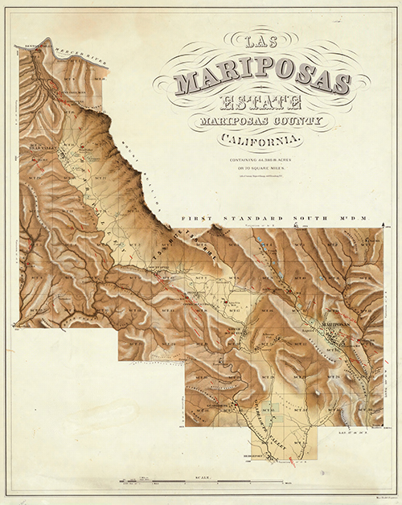
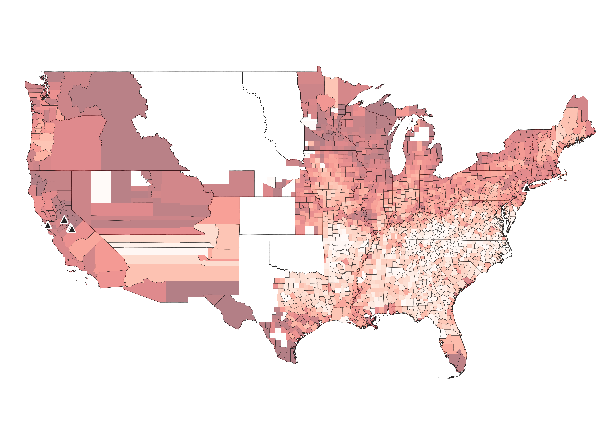
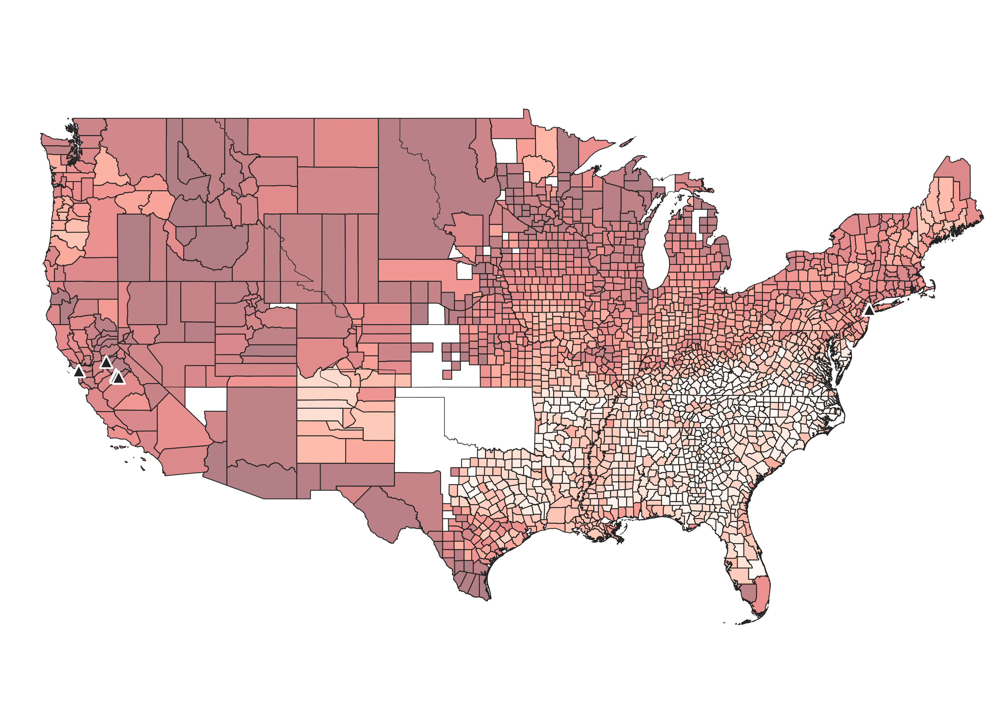
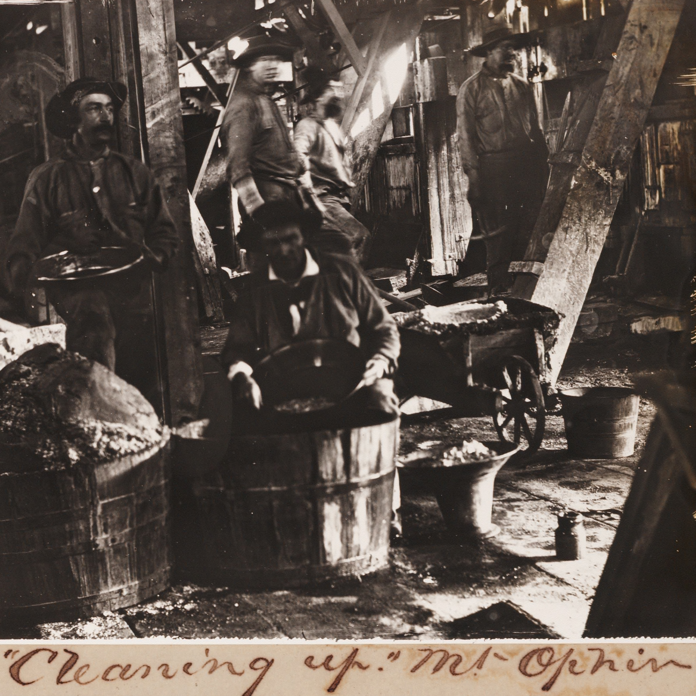

Read Me
- This is a final project for Architecture's Subjects: Labor's Histories [ARC550] by Maxwell Smith-Holmes, a PhD student in architectural history at Princeton University.
- Navigate to different sections of the site using the pull down menus to the left. Scroll down to read the essay this project is based on. Use the "Documents" pane on the right to view sources, image captions, or additional materials.
- A full list of references is available at the bottom of this page
Essay
Six years after overseeing the design and construction of Central Park in New York, Frederick Law Olmsted was appointed “Superintendent or Manager” of the Mariposa Estate, a network of gold mines occupying a ten square mile land grant in central California.1 Olmsted’s reputation largely rests on his formative role in shaping the modern profession of landscape architecture and his journalistic career, including a series of abolitionist texts on the agricultural economies of the American South published in major newspapers in the years immediately before the Civil War. Olmsted is less known for his work in mineral extraction.2 The mid-19th century rapport between landscape architecture and mining illuminated by Olmsted’s work managing Mariposa Estate, I argue, underscores the historical intimacy between land, labor, and value.3

Photograph of Mariposa Estate. Carleton E. Watkins, Mariposa, date unknown. (UC Berkeley, Bancroft Library)
The New York businessmen controlling the Mariposa Company selected Olmsted to run the mines’ day-to-day operations because of his proven administrative competencies, familiarity with the political economy of land-based industries, and his work on Central Park’s clear applicability to mining.4 On the newly incorporated Company’s personnel decision, a September 1864 New York Times article remarked, “As to their ‘Manager,’ and his fitness for the position, they need say no more than refer the public to his great and enduring work of the Central Park.”5 Indeed, in the making of Central Park, Olmsted oversaw a highly technological endeavor combining design with all the practical challenges of moving massive amounts of earth. Moreover, manipulating rocks, soil, trees, and other natural elements required extensive human labor; over the course of Central Park’s construction, Olmsted directed a 3,000-person labor force.6 After Central Park, Olmsted was well-positioned to manage the seven gold mines, four mills, two company stores, and small railroad comprising Mariposa Estate.
Both Central Park and Mariposa needed significant expenditures of human energy for their creation and perpetual maintenance. Scholars such as Anne Whiston Spirn, Jane Hutton, and others have commented on the condition by which the naturalistic appearance of Olmsted’s landscapes occludes the human labor that constructed them.7 In the case of Mariposa, this occlusion is literal in that many of those hired to work the mines did their jobs underground, hidden in hastily built tunnels beneath sprawling mineral veins. About seven thousand people were employed in capacities ranging from administrative office jobs to menial physical labor that required being underground in unhealthy and dangerous conditions for most the day.8 Almost everyone lived on the Estate either in housing provided by the Company to some classes of workers, in rental properties, or in ad-hoc shelters dispersed around the outskirts of villages. Unsurprisingly, this gradation in housing arrangements mapped onto racial and class hierarchies: Olmsted’s letters depict clusters of tent-like shanties segregated by race for Chinese, Indian, and Mexican workers.9
This racially stratified economic geography organized Mariposa’s society vertically as well as horizontally. Workers of color, particularly of Chinese descent, often did the riskiest and least remunerated work deep down sometimes hundreds of feet in mineshafts producing more than ten tons of ore each month.10 Olmsted’s operation must be understood, then, as not only producing monetary value in minerals but also as producing racialized subjects as expendable, poorly paid, and underground. In other words, a Mariposa Estate, racial difference was a function of the varying proximity between mineral matter and particular workers’ bodies and of the geological strata in which they labored. The “geologic life,” as the geographer Kathryn Yusoff might describe it, of Olmsted’s employees at Mariposa differed dramatically when seen from above or below ground.11
To Mariposa’s shareholders, all of whom witnessed the erection of Central Park first-hand, Olmsted’s practice of landscape architecture likely appealed as a somewhat alchemical transformation of space, minerals, vegetation, and water into something new and valuable, much like mining produced expensive and luxurious objects from the ground. The “feverish futurity of gold rush,” to borrow a phrase from historian Manu Karuka, propelled a powerful mythology of financial gains submerged in veins underground, waiting to be realized.12 In Civil War era U.S., transforming earth – either into an urban park or securities floated on the New York Stock Exchange – entailed significant technological and managerial expertise. Olmsted was perfectly suited to exploit the financial potential of ground. Mariposa’s status as a pecuniary landscape becomes clear in a letter Olmsted sent to his father in February 1864 describing the twice-monthly process of “cleaning up,” by which raw gold and quicksilver are transformed into monetary media by officials from Wells, Fargo, & Co. permanently stationed at the mining settlement. After Olmsted himself separates the two minerals, Wells, Fargo, & Co. agents “value the dust at sight,” then transport the material to a “Central Office,” where according to Olmsted, it is “weighed, rudely refined and melted, cast into bars like thin bricks, stamped, kept one night in our safe box and by the following day’s mail stage, in Wells Fargo’s box, it goes to our bankers.” Once assayers verify the values of gold and silver bricks, a “Mint certificate” is issued and the final monetary value either credited to Mariposa’s bank accounts or delivered to the mine as coin.13 This process demonstrates that the Mariposa Estate was materially interwoven with the institutions and techniques of financialization; the techniques of constructing nature that Olmsted exhibited in Central Park provided the precedent for a labor-intensive transmutation of land into money.14
In March 1864, Olmsted determined that the mine worker’ wages were too high, so he slashed pay and began hiring Chinese laborers at $1.75 per day, about a dollar less than white workers were paid. Miners then organized a strike, which Olmsted eventually terminated by sending sheriffs after the action’s organizers.15 Olmsted’s readiness to hire Chinese workers as replacements for those on strike demonstrates Cedric Robinson’s assertion that “the character of capitalism can only be understood in the social and historical context of its appearance.”16 As a manager, Olmsted employed pre-existing racial differences to blunt the work stoppage’s effects on profit so that Mariposa Company could continue to pay its shareholder dividends.
Throughout Olmsted’s tenure at Mariposa Estate, his writings and correspondence show him applying his longstanding concern with the links between social conduct and the built environment to the new landscape of California. In the Law and History Review article, “Olmsted’s Police,” David Thacher describes Olmsted’s installation of a Central Park police force based on a philosophy of policing that sought to regulate the decorum of urban masses to prevent more serious injuries from eventually occurring.17 At Mariposa, Olmsted projected this understanding of urban parks as spaces for social ordering onto the much larger scale of the arid landscape of the American West. Under his management, Olmsted hoped to make the West “civilized.”18
Olmsted remained in charge of Mariposa Estate between 1863 and 1865, during which time he ingratiated himself with the leaders of San Francisco businesses like banks, shippers, telegraph companies, canal building firms, and oil prospectors – the kinds of firms that would soon profit from settler expansionism.19 Olmsted himself invested in these firms while also managing other New York elites’ investments in California infrastructure. In his final months in California, after resigning from Mariposa Estate, Olmsted worked as an informal advisor on petroleum and agricultural investments.20 During his time in California, Olmsted’s expertise in land-based production had led to a new act in his career. Through his work as a park designer, mine manager, and financial consultant, Olmsted defined a unique profession based on turning land into value, and keeping the labor hidden from sight. ☐
References
Bhandar, Brenna. “Property, Law, and Race: Modes of Abstraction.” UC Irvine Law Review, Symposium Issue: Law As II, History as Interface for the Interdisciplinary Study of Law: Articles & Essays, 4, no. 1 (2014): 203–18.
Blodgett, Geoffrey. “Frederick Law Olmsted: Landscape Architecture as Conservative Reform.” The Journal of American History 62, no. 4 (1976): 869–89. https://doi.org/10.2307/1903842.
Browne, J. Ross. “Official Report of J. Ross Browne, U.S. Commissioner, &c., upon the Mineral Resources of the Mariposa Estate.” New York: Russells’ American Steam Printing House, 1868.
Eigen, Edward. “Birds, Dogs, and Humankind in Olmsted’s ‘Bramble’: A Story of Central Park.” Studies in the History of Gardens & Designed Landscapes 42, no. 1 (January 2, 2022): 3–21. https://doi.org/10.1080/14601176.2022.2035164.
———. “Claiming Landscape as Architecture.” Studies in the History of Gardens & Designed Landscapes 34, no. 3 (July 3, 2014): 226–47. https://doi.org/10.1080/14601176.2014.911577.
———. “Olmsted and the ‘Veritable and Eminent Pirate’ Captain William Kidd: An Unhistorical History.” Studies in the History of Gardens & Designed Landscapes 42, no. 4 (October 2, 2022): 254–75. https://doi.org/10.1080/14601176.2022.2161190.
———. “Olmsted’s Pencil Sharpener.” Studies in the History of Gardens & Designed Landscapes 40, no. 3–4 (October 1, 2020): 322–29. https://doi.org/10.1080/14601176.2020.1784603.
Goldstein, Alyosha. “By Force of Expectation.” Discourse – UCLA Law Review, March 1, 2018. https://www.uclalawreview.org/by-force-of-expectation/. Hoy, James. Letter to Frederick Law Olmsted, August 20, 1863. Library of Congress, Frederick Law Olmsted Papers. https://www.loc.gov/resource/mss35121.mss35121_025_0770_0805/?sp=7.
Hutton, Jane. “On Fertility.” Journal of Architectural Education 68, no. 1 (January 2, 2014): 43–46. https://doi.org/10.1080/10464883.2013.865466.
Karuka, Manu. Empire’s Tracks: Indigenous Nations, Chinese Workers, and the Transcontinental Railroad. Oakland, California: University of California Press, 2019.
Madley, Benjamin. An American Genocide: The United States and the California Indian Catastrophe, 1846-1873. The Lamar Series in Western History. New Haven: Yale University Press, 2016.
Martin, Reinhold. Knowledge Worlds: Media, Materiality, and the Making of the Modern University. New York: Columbia University Press, 2021.
Marx, Karl. “The Labor Process and the Valorization Process.” In Capital: A Critique of Political Economy, Volume 1:283–306. 1867. Reprint, London: Penguin Books, 1990.
Mumford, Lewis. Technics and Civilization. 1934. Reprint, Chicago ; London: The University of Chicago Press, 2010.
Chamberlain, Newell D. The Call of Gold: True Tales on the Gold Road to Yosemite. Mariposa, Calif.: Gazette Press, 1936.
Olmsted, Frederick Law. “Civilizing the Frontier.” In The California Frontier, 1863-1865, edited by Victoria Post Ranney, Garard J. Rauluk, and Carolyn F. Hoffman, 212–38. The Papers of Frederick Law Olmsted, v. 5. Baltimore: Johns Hopkins University Press, 1990.
———. “Letter to John Olmsted, February 11, 1864.” In The California Frontier, 1863-1865, edited by Victoria Post Ranney, Garard J. Rauluk, and Carolyn F. Hoffman, 186–92. The Papers of Frederick Law Olmsted, v. 5. Baltimore: Johns Hopkins University Press, 1990.
———. The Cotton Kingdom: A Traveller’s Observations on Cotton and Slavery in the American Slave States. Based upon Three Former Volumes of Journeys and Investigations .. New York: Mason brothers; etc, etc, 1861. http://nrs.harvard.edu/urn-3:HUL.FIG:001724205.
Park, K-Sue. “Money, Mortgages, and the Conquest of America.” Law & Social Inquiry 41, no. 04 (2016): 1006–35. https://doi.org/10.1111/lsi.12222.
Ranney, Victoria Post. “Introduction.” In The California Frontier, 1863-1865, edited by Victoria Post Ranney, Garard J. Rauluk, and Carolyn F. Hoffman, 5:1–40. The Papers of Frederick Law Olmsted. Baltimore: Johns Hopkins University Press, 1990.
Roper, Laura Wood. FLO, a Biography of Frederick Law Olmsted. Johns Hopkins University Press, 1983.
———. “Frederick Law Olmsted and the Western Texas Free-Soil Movement.” The American Historical Review 56, no. 1 (1950): 58–64. https://doi.org/10.2307/1840621.
Spirn, Anne Whiston. “Constructing Nature: The Legacy of Frederick Law Olmsted.” In Uncommon Ground: Rethinking the Human Place in Nature, edited by William Cronon, 91–113. New York: W.W. Norton, 1996.
Thacher, David. “Olmsted’s Police.” Law and History Review 33, no. 3 (August 2015): 577–620. https://doi.org/10.1017/S0738248015000231.
Williams, Rosalind H. Notes on the Underground: An Essay on Technology, Society, and the Imagination. New ed. Cambridge, Mass.: The MIT Press, 2008.
Yusoff, Kathryn. A Billion Black Anthropocenes or None. Forerunners (Minneapolis, Minn.). Minneapolis, MN: University of Minnesota Press, 2018.
Final project by Maxwell Smith-Holmes for Architecture's Subjects: Labor's Histories [ARC550]
Last updated May 12, 2023
documents
- 
Max Strobel, Las Mariposas Estate, Containing 44,386 83/100 Acres or 70 Square Miles, 1:38,000 (449 Broadway, New York: Lithograph of Sarony Major & Knapp, 1861).
- James Hoy to Frederick Law Olmsted, August 20, 1863, Library of Congress, Frederick Law Olmsted Papers.
- See Edward Eigen, “Claiming Landscape as Architecture,” Studies in the History of Gardens & Designed Landscapes 34, no. 3 (July 3, 2014): 226, https://doi.org/10.1080/14601176.2014.911577; among Olmsted’s most famous works on the economies of slave-holding states is, The Cotton Kingdom: A Traveller’s Observations on Cotton and Slavery in the American Slave States. Based upon Three Former Volumes of Journeys and Investigations .. (New York: Mason brothers; etc, etc, 1861), http://nrs.harvard.edu/urn-3:HUL.FIG:001724205.
- See, for instance, Karl Marx’s discussion of the “metabolic interaction between man and nature” that is the “labour process,” in “The Labor Process and the Valorization Process,” in Capital: A Critique of Political Economy, vol. Volume 1 (1867; repr., London: Penguin Books, 1990), 290.
- Victoria Post Ranney, “Introduction,” in The California Frontier, 1863-1865, ed. Victoria Post Ranney, Garard J. Rauluk, and Carolyn F. Hoffman, vol. 5, The Papers of Frederick Law Olmsted (Baltimore: Johns Hopkins University Press, 1990), 5.
- “Mariposa Company,” New York Times, September 14, 1863, 4.
- Ranney, 9.
- 
U.S. counties in 1860. Darker red counties have a higher percentage of foreign born population. Data source: Steven Ruggles, Catherine A. Fitch, Ronald Goeken, J. David Hacker, Matt A. Nelson, Evan Roberts, Megan Schouweiler, and Matthew Sobek. IPUMS Ancestry Full Count Data: Version 3.0 [dataset]. Minneapolis, MN: IPUMS, 2021. https://doi.org/10.18128/D014.V3.0.
- 
U.S. counties in 1870. Darker red counties have a higher percentage of foreign born population. Data source: Ruggles et. al., IPUMS Ancestry Full Count Data: Version 3.0 [dataset]. Minneapolis, MN: IPUMS, 2021.
- Anne Whiston Spirn, “Constructing Nature: The Legacy of Frederick Law Olmsted,” in Uncommon Ground: Rethinking the Human Place in Nature, ed. William Cronon (New York: W.W. Norton, 1996), 91–113; Jane Hutton, “On Fertility,” Journal of Architectural Education 68, no. 1 (January 2, 2014): 43–46, https://doi.org/10.1080/10464883.2013.865466.
- J. Ross Browne, “Official Report of J. Ross Browne, U.S. Commissioner, &c., upon the Mineral Resources of the Mariposa Estate” (New York: Russells’ American Steam Printing House, 1868), 19; Frederick Law Olmsted, “Letter to James Hoy, March 2, 1864,” in The California Frontier, 1863-1865, ed. Victoria Post Ranney, Garard J. Rauluk, and Carolyn F. Hoffman, The Papers of Frederick Law Olmsted, v. 5 (Baltimore: Johns Hopkins University Press, 1990), 197; the figure of 7,000 workers comes from Victoria Post Ranney, “Introduction,” in The California Frontier, 1863-1865, ed. Victoria Post Ranney, Garard J. Rauluk, and Carolyn F. Hoffman, vol. 5, The Papers of Frederick Law Olmsted (Baltimore: Johns Hopkins University Press, 1990), 6.
- Laura Wood Roper, FLO, a Biography of Frederick Law Olmsted (Johns Hopkins University Press, 1983), 240.
- Olmsted, “Letter to James Hoy, March 2, 1864,” 197.
- See Kathryn Yusoff, A Billion Black Anthropocenes or None, Forerunners (Minneapolis, Minn.) (Minneapolis, MN: University of Minnesota Press, 2018).

Street in Hornitos. From Newell D. Chamberlain, The Call of Gold: True Tales on the Gold Road to Yosemite (Mariposa, Calif.: Gazette Press, 1936), 135.

"Chinese mining on Mariposa Creek, 1867." From Newell D. Chamberlain, The Call of Gold: True Tales on the Gold Road to Yosemite (Mariposa, Calif.: Gazette Press, 1936), 26.
- Manu Karuka, Empire’s Tracks: Indigenous Nations, Chinese Workers, and the Transcontinental Railroad (Oakland, California: University of California Press, 2019), 6.
- Frederick Law Olmsted, “Letter to John Olmsted, February 11, 1864,” in The California Frontier, 1863-1865, ed. Victoria Post Ranney, Garard J. Rauluk, and Carolyn F. Hoffman, The Papers of Frederick Law Olmsted, v. 5 (Baltimore: Johns Hopkins University Press, 1990), 187–88.
- On the contradictory equation between, land, property, and money, see K-Sue Park, “Money, Mortgages, and the Conquest of America,” Law & Social Inquiry 41, no. 04 (2016): 1009, https://doi.org/10.1111/lsi.12222.
- 
Cleaning Up at Mt. Ophir. Carleton E. Watkins, Mariposa, ca. 1861. (Beinecke Library, Yale University)
- Ranney, “Introduction,” 15–16.
- Cedric Robinson, “Racial Capitalism: The Nonobjective Character of Capitalist Development,” in Black Marxism: The Making of the Black Radical Tradition (1983; repr., Chapel Hill, North Carolina: University of North Carolina Press, 2000), 24.
- David Thacher, “Olmsted’s Police,” Law and History Review 33, no. 3 (August 2015): 581, https://doi.org/10.1017/S0738248015000231; Eigen treats Olmsted’s Central Park police force in “Birds, Dogs, and Humankind in Olmsted’s ‘Bramble’: A Story of Central Park,” Studies in the History of Gardens & Designed Landscapes 42, no. 1 (January 2, 2022): 5, https://doi.org/10.1080/14601176.2022.2035164.
- Ranney, “Introduction,” 2.
- Ranney, 31.
- Olmsted’s work as an informal financial advisor for east coast elites interested in western investments is detailed through a series of letters published in, “Civilizing the Frontier,” in The California Frontier, 1863-1865, ed. Victoria Post Ranney, Garard J. Rauluk, and Carolyn F. Hoffman, The Papers of Frederick Law Olmsted, v. 5 (Baltimore: Johns Hopkins University Press, 1990), 212–38.

Josephine Mine. Carleton E. Watkins, Mariposa, ca. 1861. (Beinecke Library, Yale University)